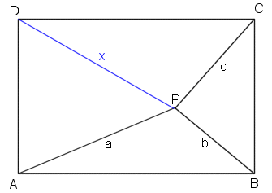

Puzzle 30: Entfernung eines Baumes

Auf einem rechteckigen Grundstück ABCD steht ein Baum P. Er ist a Meter von A, b Meter von B und c Meter von C entfernt.
a) Wie gross ist seine Entfernung x von D in Abhängigkeit von a, b und c?
Zur Lösung genügt der Satz von Pythagoras
b) Finden Sie natürliche Zahlen a, b und c derart, dass x ebenfalls eine natürliche Zahl ist. Dabei sind die trivialen Lösungen a = b bzw. c = b auszuschliessen.
©1997 - 2026 www.mathematik.ch |🔍